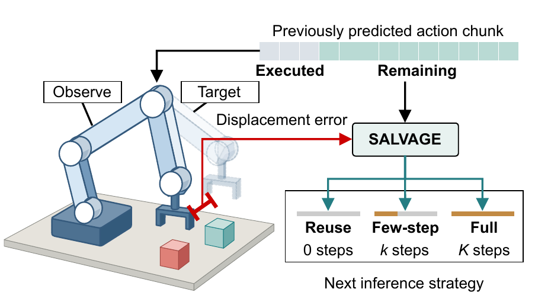

The Next Plan Is Already Halfway There:
Adaptive Inference with SALVAGE
Abstract
Approach

Comparison to full inference
Visual Results
LIBERO · Fast-WAM
RoboTwin
Real robot
Composition with C³ache
Table speedups aggregate model inference across trials; video speedups use approximate single-episode rollout times, so simulation, rendering and control overhead dilute the inference gain.
Failure cases
These examples reflect base-policy limitations: the same failure modes occur under full inference, rather than being introduced by SALVAGE.
BibTeX